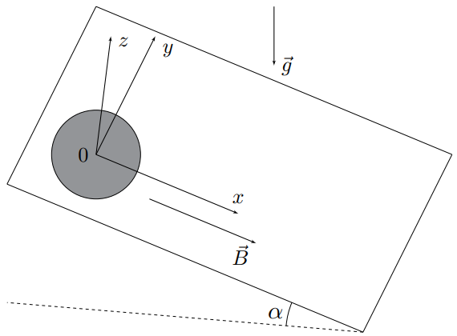
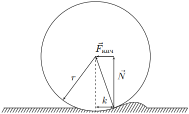
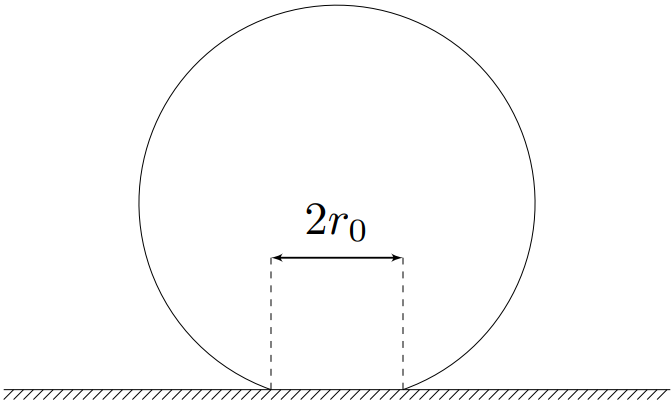

Y23 (2023) — English translation
Gyroscopic forces are responsible for a number of interesting phenomena. For example, the Coriolis force leads to the erosion of river banks, the Lorentz force leads to the curvature of particle trajectories, the precession of atoms in a magnetic field, etc. In addition to gyroscopic forces, parasitic types of friction are interesting to study - rolling friction and spinning friction, which arise when bodies roll and spin on a surface. This problem also studies the influence of the magnetic field and parasitic types of friction on mechanical motion.
As is known, the moment of forces acting on a coil with current from a uniform magnetic field is not equal to zero. Let us consider a ball of radius $r$ with a fixed center, charged uniformly throughout the volume with charge $q$ and rotating with angular velocity $\vec{\omega}$ in a uniform magnetic field with induction $\vec{B}$. A rotating ball is equivalent to a set of circular currents.
Next, at all points of the problem, the motion of a homogeneous ball of radius $r$ and mass $m$, charged uniformly throughout the volume with a positive charge $q$, is studied. The ball moves without slipping along a plane forming an angle $\alpha$ with the horizon, along which a uniform magnetic field of induction $\vec{B}$ is directed. The acceleration due to gravity is $\vec{g}$.
Next, at all points of the problem, the motion of a homogeneous ball of radius $r$ and mass $m$, charged uniformly throughout the volume with a positive charge $q$, is studied. The ball moves without slipping along a plane forming an angle $\alpha$ with the horizon, along which a uniform magnetic field of induction $\vec{B}$ is directed. The acceleration due to gravity is $\vec{g}$.

The above figure shows the coordinate system $xyz$ with unit unit vectors $\vec{e}_x$, $\vec{e}_y$ and $\vec{e}_z$ such that the unit vector $\vec{e}_y$ is directed horizontally, and the magnetic field induction vector is written as $\vec{B}=\vec{e}_x\cdot{B}$.
Let us introduce the following notation: $\vec{r}$ is the radius vector drawn from the center of the ball to its point of contact with the plane; $\vec{v}_C$ — speed of the ball center; $\vec{a}_C$ — acceleration of the center of the ball; $\vec{\omega}$ is the angular velocity of the ball; $\dot{\vec{\omega}}$ is the angular acceleration of the ball; $I$ is the moment of inertia of the ball relative to the axis passing through the diameter; $\vec{L}_C$ is the angular momentum of the ball relative to the center of mass; $\vec{F}$ and $\vec{N}$ are the friction and normal reaction forces, respectively, acting on the ball from the side of the plane.
Let's introduce the following notation:
At time $t=0$ the ball is motionless and its center is located at the origin.
Since the moment of inertia $I$ of the ball is the same for any axis passing through the center, the vector of its angular momentum relative to the center of mass is written as: $$\vec{L}_C=I\vec{\omega} $$
Note: Take advantage of the double cross product property:
$$\bigl[\vec{a}\times\bigl[\vec{b}\times\vec{c}\bigr]\bigr]=\vec{b}\bigl({~}\vec{a}\cdot\vec{c}{~}\bigr)-\vec{c}\bigl({~}\vec{a}\cdot\vec{b}{~}\bigr)$$
Из уравнения динамики вращательного движения видно, что при движении шар начинает вертеться (вращаться относительно оси $z$, perpendicular to the plane).
Let's move on to analyzing the trajectory of the ball's center. Further, at all points, the ball is initially motionless, and its center is located at the origin of coordinates.
Let's analyze the kinematics of this movement.
Let's move on to the necessary conditions for the ball to move without slipping.
In fact, the movement of the ball is affected by two types of parasitic friction at once - rolling friction and spinning friction. The next two parts independently study the influence of these effects on the movement of the ball.
The cause of ball rolling resistance is surface roughness. The effect of rolling friction can be modeled as follows: the ball also moves along the surface without slipping, and the effective point of application of the normal reaction force acquires a shoulder $k$ relative to the point of contact of the ball with the plane (see Fig.). In this case, the redistributed normal reaction force gives zero moment relative to the center of the ball and, due to its nature, does not in any way affect the force of static or sliding friction. The shoulder $k$ is always assumed to be small compared to $r$, therefore for the rolling friction force $\vec{F}_\text{кач}$ we can write: $$\vec{F}_\text{кач}=-\vec{e}_{v_C}\cdot\cfrac{kN}{r} $$где $\vec{e}_{v_C}$ — единичный вектор, направленный вдоль скорости центра шара. Будем считать коэффициент $k$ постоянным и не зависящим от направления скорости центра.
Причиной возникновения сопротивления качению шара является неровность поверхности. Смоделировать эффект трения качения можно следующим образом: шар также движется по поверхности без проскальзывания, а эффективная точка приложения силы нормальной реакции приобретает плечо $k$ относительно точки касания шара с плоскостью (см.рис). При этом перераспределённая сила нормальной реакции даёт нулевой момент относительно центра шара и в силу своей природы никак не влияет на силу трения покоя или скольжения. Плечо $k$ всегда предполагается малым по сравнению с $r$, поэтому для силы трения качения $\ve c{F}_\text{quality}$ можно написать: $$\vec{F}_\text{кач}=-\vec{e}_{v_C}\cdot\cfrac{kN}{r} $$где $\vec{e}_{v_C}$ — единичный вектор, направленный вдоль скорости центра шара. Будем считать коэффициент $k$ constant and independent of the direction of the center velocity.

At time $t=0$ the ball is motionless, and its center is located at the origin.
Next, assume that $\operatorname{tg}\alpha\gg{k/r}$.
Spinning friction occurs due to non-point contact of the ball with the plane. We will assume that the ball is in contact with a plane in the region of a circle of radius $r_0\ll{r}$, over the area of which the normal reaction force $N$ is uniformly distributed. The sliding friction coefficient of the ball on the surface is equal to $\mu$.
Spinning friction occurs due to non-point contact of the ball with the plane. We will assume that the ball is in contact with a plane in the region of a circle of radius $r_0\ll{r}$, over the area of which the normal reaction force $N$ is uniformly distributed. The sliding friction coefficient of the ball on the surface is $\mu$.

Note 1: Generally speaking, the value of $r_0$ is determined by the strength of the normal reaction $N$, but when solving the problem, it is not necessary to find the connection between $r_0$ and $N$. Note 2: In this part of the problem, the absence of slipping means that the center of the circle of contact between the ball and the plane is always motionless. Consider that the static friction force is applied to the center of the circle of contact.
Note 2: In this part of the problem, the absence of slipping means that the center of the circle of contact between the ball and the plane is always motionless. Consider that the static friction force is applied to the center of the circle of contact.
At time $t=0$ the ball is motionless and its center is located at the origin.
Source: https://pho.rs/p/3233